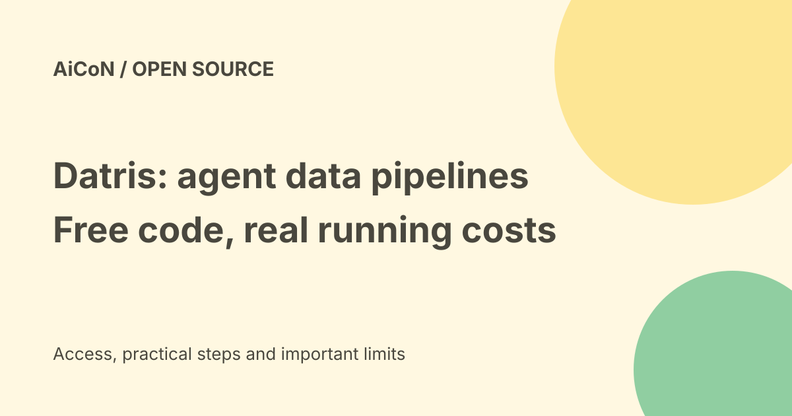

Datris: self-hosted data pipelines for AI agents, with real costs
Datris is an open-source data platform that gives AI agents tools for ingesting, validating and working with data. The software is free to self-host under AGPL-3.0. Running it still needs infrastructure and may need paid model APIs. It is a technical platform, not a free hosted chatbot.

What is Datris?
Datris calls itself an agent-native data platform. In plain words, it gives an AI client tools for managing data pipelines rather than only replying with text. The official repository describes ingestion, validation, transformation and delivery of data, with policies, audit logs, provenance and recovery features.
A pipeline is a defined path for moving and changing data. Provenance records where the data or operation came from. These can make work easier to inspect, but a logged operation can still be wrong if the data, policy or generated code is wrong.
What can it help with?
The project describes Taps: generated Python scripts that fetch data from APIs, databases and other sources and push it into pipelines. It also describes scheduling, AI diagnosis and credentials handled through Vault. MCP tools let a compatible AI client work with the platform. A REST API is another connection path.
Its stack includes several services, such as PostgreSQL, MongoDB, Kafka, MinIO and Vault. This is more to run and maintain than a small script. The pricing page says the community build contains all features and governance controls, with no separate feature-gated enterprise edition. Treat that as the project's current product policy, not an independent reliability test.
Free access and costs in India
| Community software | $0 self-hosted under AGPL-3.0. |
|---|---|
| Infrastructure | Your computer or server, storage, backups and administration still cost resources. |
| AI services | Provider API use may be billed separately. The repository has Anthropic/OpenAI configuration options. |
| Commercial licence | Deployment-scoped proposal; no fixed public amount on the pricing page. |
There is no India-specific price or hosted free-plan guarantee in these pages. An Indian developer can inspect the public code, but that does not guarantee model-provider availability, billing access or a production support agreement.
How to start without rushing
- Read the official repository's current Quick Start and licence. Use a local development machine with Docker and enough resources for its services.
- Inspect downloaded installation scripts or compose files before running them. Prefer understanding what they start over pasting a shell command blindly.
- Follow the repository's Docker route. The standalone instructions require Docker Compose 2.23 or later; source checkout instructions include an environment-file example.
- Store model keys in the intended secret configuration. Do not commit them to Git or paste them into a public issue.
- Check that the local interface and API are running. Use a small made-up CSV and verify each pipeline result against the input.
- Only then consider a compatible MCP client. Inspect which tools it can call and the policies controlling changes.
We did not install the stack, send data or test an AI client. Commands, ports and dependencies can change, so the linked repository is the source for exact setup.
Security and licence checks
The README says the default local OSS setup uses USE_API_KEYS=false. That local convenience is not a safe public-server policy. Before shared or production use, enable appropriate authentication, restrict network access, review agent policies, keep backups and inspect audit records. Generated scripts can read, write or send data: review their code and destination first.
AGPL-3.0 has obligations for modified versions you distribute and, under its network clause, modified versions users interact with remotely. Datris offers commercial licences for other deployment arrangements. Read the licence and get legal advice for a business deployment; this guide is not a legal interpretation of your situation.
Frequently asked questions
Does free software mean free AI use?
No. Model APIs, hardware and hosting are separate costs.
Is it beginner friendly?
The setup expects Docker, service configuration and data-security knowledge.
Does self-hosting keep every operation local?
Not automatically. External model providers, source APIs and generated scripts may create network traffic. Check configuration and code.
What changed since the earlier post?
This guide uses the current public OSS repository, the $0 community pricing policy and the commercial licensing page. It separates code access from running costs and explains why local defaults are not production security. No installation or performance claim is made.
Sources: Official open-source repository · Pricing and community policy · Licence guide. Checked 7 October 2026.